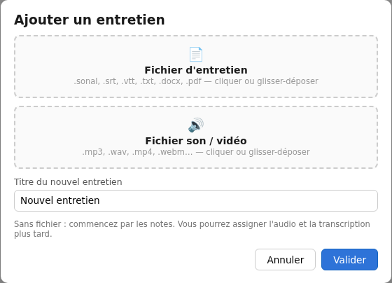

Préparer et importer une transcription
L’import ajoute un entretien à votre corpus à partir d’un fichier de transcription. Vous pouvez lui associer son audio ou sa vidéo pour vérifier ce qui a été dit, ou travailler uniquement sur le texte.
Cette page décrit l’ajout dans un corpus local. Si vous n’en avez pas encore, commencez par créer votre corpus.
Choisir le bon format
| Fichier | Ce qu’il apporte |
|---|---|
| .srt ou .vtt | Une transcription avec des repères de temps. C’est le choix à privilégier si votre outil de transcription propose ces formats. |
| .txt | Du texte brut. SonalPi peut reconnaître des noms de locuteurs et des repères de temps s’ils sont écrits dans une structure adaptée. |
| Word (.docx) ou PDF | Une transcription dont SonalPi récupère le texte. Les noms de locuteurs et les repères de temps sont reconnus selon les mêmes conventions que dans un fichier TXT. |
| .sonal | Un entretien au format d’échange Sonal, qui peut déjà contenir des codages, des notes ou d’autres informations. |
Vous pouvez choisir directement votre fichier Word ou PDF dans Fichier d’entretien, ou le déposer dans cette zone. Pour un fichier TXT, utilisez un enregistrement en texte brut UTF-8.
Les documents de méthode, guides d’entretien ou notices de consentement vont dans Préparer et suivre → Documents du projet, pas dans la liste des entretiens.
Pour reprendre un corpus V1 complet avec son fichier .crp, utilisez la migration V1 vers V2. Pour rouvrir un entretien sur lequel vous travaillez déjà en V2, ouvrez son corpus : ne réimportez pas le fichier de transcription.
Préparer le texte et les locuteurs
Avec un fichier SRT
Conservez les numéros, les lignes de temps et les séparations entre les passages. Voici un exemple minimal :
1
00:00:01,000 --> 00:00:04,000
Speaker 1: Depuis quand êtes-vous bénévole ?
2
00:00:04,000 --> 00:00:08,000
Speaker 0: Je participe à l’aide aux devoirs depuis cinq ans.Les préfixes Speaker 1: et Speaker 0: sont reconnus comme des locuteurs distincts, sans changer leur numérotation. Vous pourrez les renommer après l’import.
Si les locuteurs portent déjà des noms
Un nom suivi de deux-points au début du passage est aussi reconnu, avec ou sans espace avant les deux-points :
1
00:00:01,000 --> 00:00:04,000
Enquêteur : Depuis quand êtes-vous bénévole ?
2
00:00:04,000 --> 00:00:08,000
Bénévole : Je participe à l’aide aux devoirs depuis cinq ans.Gardez le même nom pour une même personne. Les passages sans préfixe restent sans locuteur attribué ; le préfixe None: est retiré sans créer de locuteur. Contrôlez toujours qui parle dans le résultat.
Avec un fichier texte
En texte brut, placez un nom de locuteur suivi de deux-points au début de chaque prise de parole. Gardez le même nom pour une même personne :
Enquêteur : Depuis quand êtes-vous bénévole ?
Bénévole : Je participe à l’aide aux devoirs depuis cinq ans.Ce texte conserve la distinction entre les deux locuteurs, mais ne contient pas de repères pour naviguer dans l’audio. Le nom « Enquêteur » ne dispense pas de vérifier son rôle dans SonalPi.
Si votre fichier texte possède des repères de temps
Vous pouvez placer le temps et le nom du locuteur sur une ligne, puis le texte en dessous. Utilisez des temps qui correspondent réellement à votre enregistrement :
00:00:01 Enquêteur
Depuis quand êtes-vous bénévole ?
00:00:04 Bénévole
Je participe à l’aide aux devoirs depuis cinq ans.Ces repères indiquent les débuts des prises de parole ; ils ne sont pas aussi détaillés que des sous-titres avec début et fin de chaque passage.
Si votre outil fournit un TXT en colonnes, comme Tadddam / NVivo
SonalPi reconnaît trois colonnes séparées par de vraies tabulations : le temps de début en secondes, le nom du locuteur et le texte. Le fichier ne doit pas comporter de ligne d’en-tête :
1.00 Enquêteur Depuis quand êtes-vous bénévole ?
4.00 Bénévole Je participe à l’aide aux devoirs depuis cinq ans.Les temps doivent être positifs ou nuls et ne pas revenir en arrière. Le point ou la virgule peuvent séparer les décimales. Le début du passage suivant sert de fin au précédent ; SonalPi n’invente pas de durée pour le dernier passage.
Si une ligne est incomplète ou incorrecte, l’import est refusé et les lignes à corriger sont indiquées. Aucun entretien n’est ajouté : corrigez une copie du fichier puis sélectionnez-la à nouveau.
Un texte sans noms ni repères de temps peut aussi être importé. Vous pourrez le lire et le coder, mais il faudra ensuite compléter les informations manquantes si vous en avez besoin.
Ajouter l’entretien
- Ouvrez le corpus local dans lequel vous souhaitez travailler.
- Dans le menu Entretiens, choisissez Ajouter un entretien…. Le bouton + Ajouter un entretien de la vue Corpus ouvre la même fenêtre.
- Cliquez dans Fichier d’entretien et sélectionnez votre transcription. Vous pouvez aussi déposer le fichier dans cette zone.
- Si vous avez son enregistrement, cliquez dans Fichier son / vidéo et sélectionnez le fichier correspondant. Sinon, laissez cette zone vide.
- Vérifiez les noms affichés, puis cliquez sur Valider.

Le nouvel entretien s’ouvre et une carte est ajoutée au corpus. Son titre vient du nom du fichier de transcription, sans son extension. Vous pourrez le renommer ensuite. Dans un parcours guidé, l’entretien peut rester fermé pour vous laisser lire le bilan de l’étape.
Ajoutez un entretien à la fois dans cette fenêtre, avec son texte et, si besoin, son enregistrement. Répétez l’opération pour les suivants. Annuler ferme la fenêtre sans ajouter l’entretien.
La zone média accepte notamment MP3, WAV, M4A, OGG et FLAC pour l’audio, MP4 ou WebM pour la vidéo. L’extension seule ne garantit pas la lecture : celle-ci dépend aussi de l’encodage du fichier.
L’enregistrement est référencé, pas copié. Il doit rester à l’emplacement choisi. Les corrections et les codages sont conservés dans le corpus ; SonalPi ne réécrit pas votre fichier de transcription d’origine.
Commencer sans transcription
- Enregistrement seul : laissez la zone texte vide et choisissez le son ou la vidéo. Un entretien au texte vide est créé, avec le nom de ce fichier. Vous pouvez commencer à écouter et à prendre des notes.
- Aucun fichier pour le moment : laissez les deux zones vides, renseignez le Titre du nouvel entretien, puis validez. Vous pouvez commencer par les notes et associer les fichiers plus tard.
Dans ces deux cas, aucune transcription automatique n’est lancée.
Vérifier le résultat
- Relisez le début et la fin : le texte attendu est-il bien présent ? Les accents sont-ils corrects ?
- Ouvrez Locuteurs : les personnes sont-elles distinguées correctement ? Les questions et les réponses sont-elles bien attribuées ?
- Si vous avez associé un enregistrement, vérifiez qu’il se lit et que les repères de temps correspondent au texte.
- Attendez l’état à jour en haut de la fenêtre avant de fermer l’application.
Si le texte est mal structuré, vérifiez la copie du fichier source avant de poursuivre le codage. Réimporter cette copie crée un autre entretien ; cela ne remplace pas les corrections déjà réalisées dans le premier.